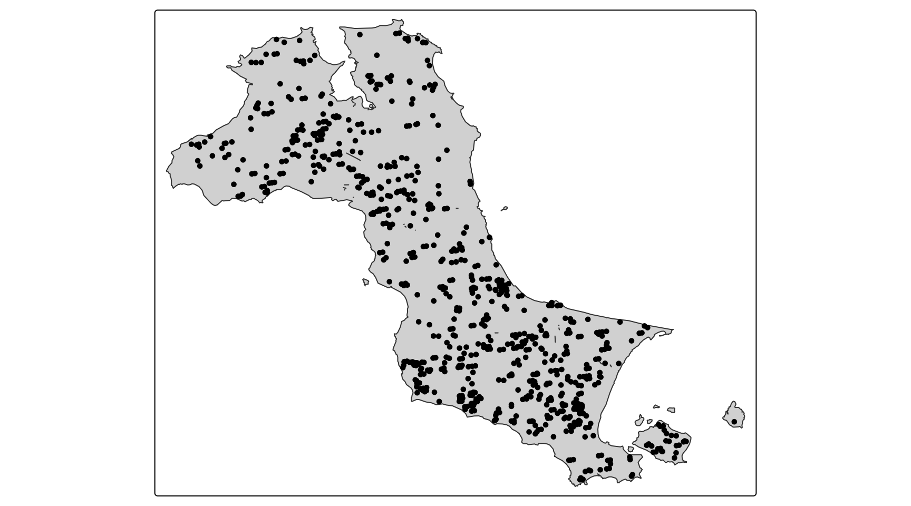
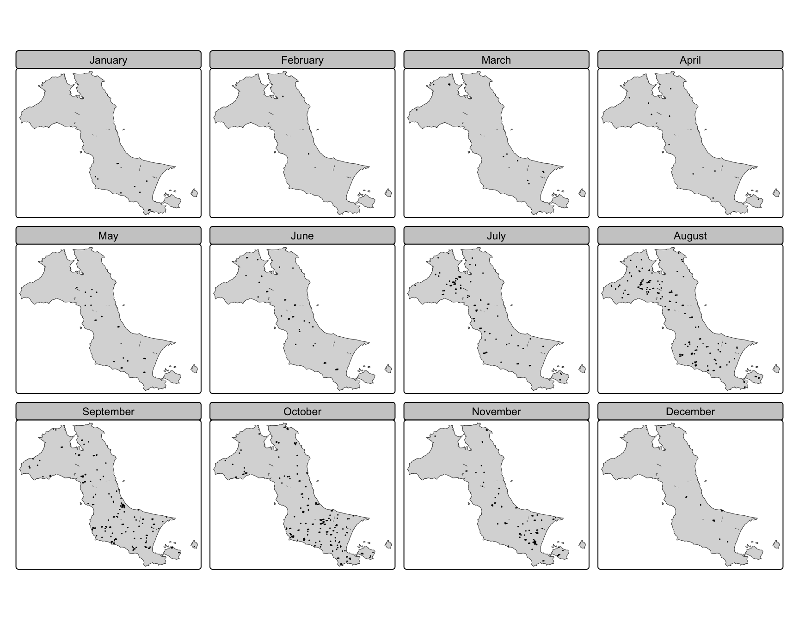
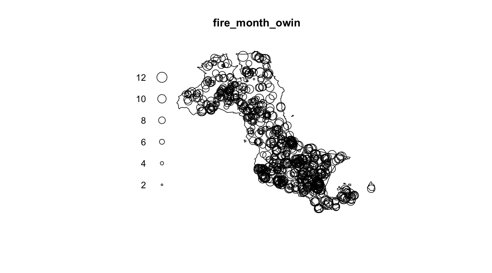
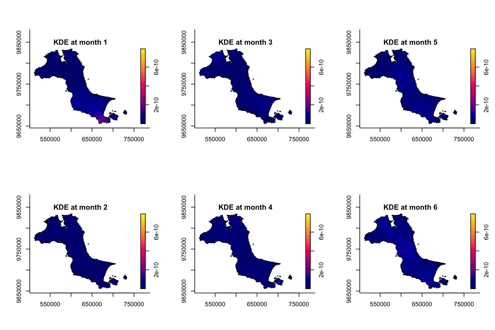
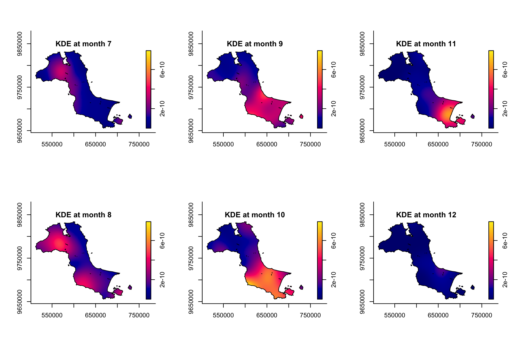
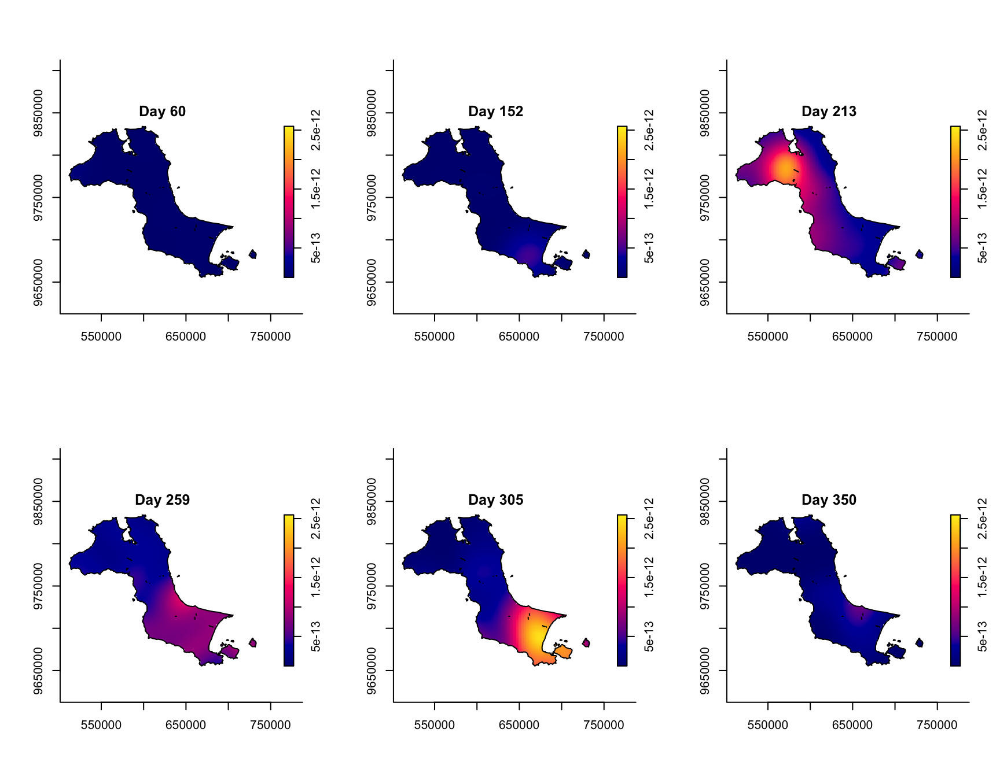
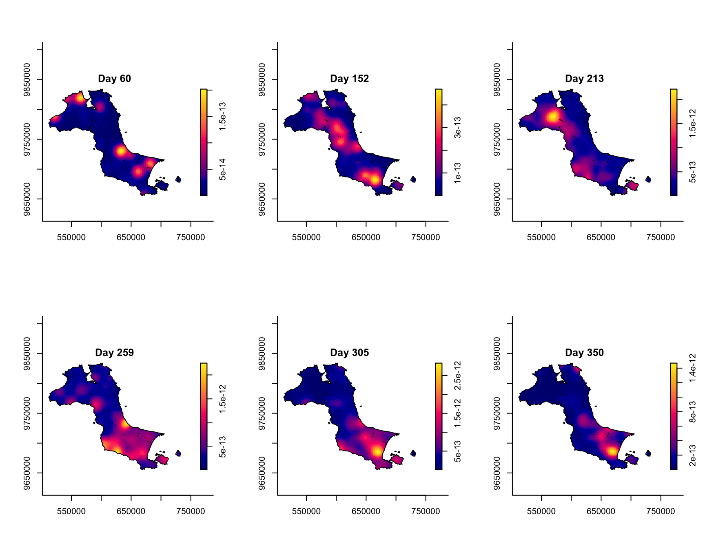
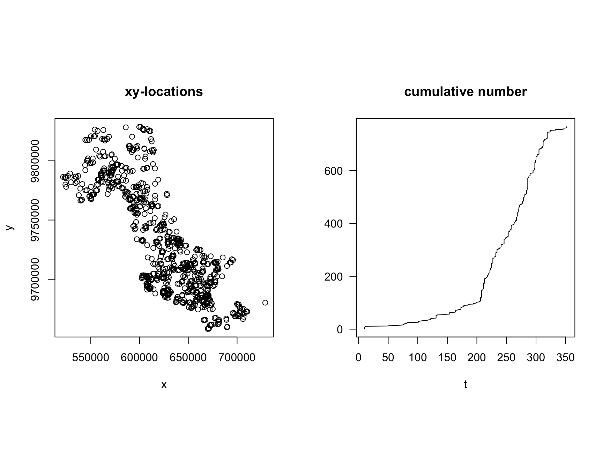
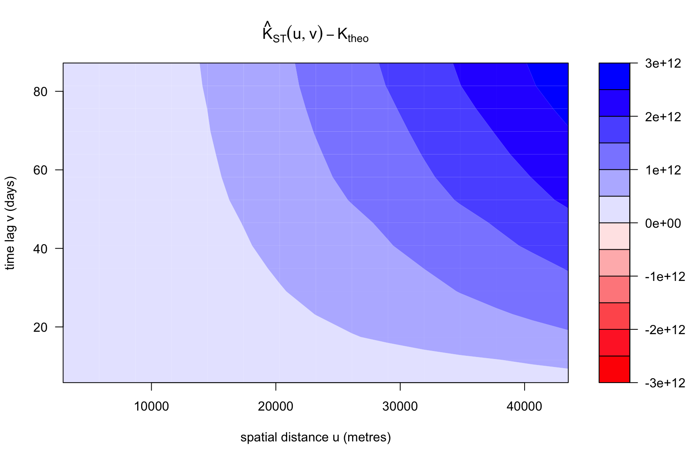

pacman::p_load(sf, spatstat, sparr, tmap, stpp, tidyverse)Hands-on Exercise 3
Spatio-Temporal Point Patterns Analysis with R
1 Overview
This exercise applies Spatio-Temporal Point Patterns Analysis (STPPA) to forest fire detections in Kepulauan Bangka Belitung, Indonesia, during 2023. It follows r4gdsa Chapter 6, the chapter assigned for Lesson 3. Where I write “the chapter” below, I mean that one.
Lesson 2 treated a point pattern as a set of locations. A spatio-temporal point pattern adds the time of each event, so the same two questions from last week are asked again in three dimensions.
Part 1 reproduces Chapter 6. It has two halves: a first-order analysis of how fire intensity varies across space and time, using sparr, and a second-order analysis of whether events interact, using the space-time K-function in stpp. Part 2 examines the chapter’s method and adds one analysis it does not attempt.
1.1 The questions being asked
The chapter asks:
- Are the locations of forest fire in Kepulauan Bangka Belitung spatial and spatio-temporally independent?
- If the answer is no, where and when do the observed fire locations tend to cluster?
Independence is a second-order property, so the first question is addressed by the K-function in section 3.2. The second requires both halves: the density estimate locates the concentrations in space and time, and the K-function establishes whether they exceed what chance would produce.
NoteReference
1.2 Differences from the chapter
| The chapter | This page | Why | Where | |
|---|---|---|---|---|
| Study area | Bangka island, 11,534 km², described as the whole province | Bangka island, 11,887 km², named as such | The chapter’s file does not cover the area its text names. Part 1 follows the chapter’s actual window | 3.1.1, 4.1 |
| Boundary source | Indonesia Geospatial portal | GADM 4.1, level 2 | The portal distributes files through a blog page linking to Google Drive, with no stable URL to cite | 2.2 |
| Fire data source | FIRMS download portal, account required | FIRMS public archive, direct URL | Same MODIS data from a stable URL that can be cited in the document | 2.2 |
| Data extent | forestfires.csv, already cut to the study area |
All 52,156 Indonesian detections, cut in code | The cut is the step that decides the answer, so it belongs in the document | 3.1.3 |
set.seed() |
Only before BOOT.spattemp() |
Once at the top | Asked for in the Lesson 2 class: without it the render is not reproducible | 2.1 |
| Months plotted | July to December | All twelve, in two blocks | Shows the instability that sparse monthly counts produce | 3.1.5.4 |
| Duplicate check | any(duplicated()) |
sum(duplicated()) |
A count says how many, which is what a data-quality check needs to report | 3.1.5.1 |
| Facet function | tm_facets() |
tm_facets_wrap() |
tm_facets() is tmap 3; this machine runs tmap 4.4.1 and emits a deprecation message |
3.1.4.2 |
| Figure heights | default | set per chunk | The study area is nearly twice as wide as it is tall, so the default canvas leaves white bands inside every map | 3.1.4.1 |
| Pipe | %>% |
|> |
Both were covered in the Lesson 2 class and the choice was left to us. The native pipe does not need tidyverse loaded | throughout |
| Offshore islets | not applicable, single polygon | 53 pieces reduced to 11 by dropping anything under 1 km² | A fire cannot occur on a rock of a few thousandths of a square kilometre, and the fragments change the bandwidth the model selects. Keeps 99.97% of the area and all 766 fires | 3.1.1, 4.2 |
| Regency breakdown | not present | added | Shows the first-order variation the density surface smooths over, and regency is the administrative unit required for Take-home Exercise 1 | 4.3 |
NoteMapping of Chapter 6 sections to this page
Every section of Chapter 6 is covered. The order is regrouped into two parts.
| Chapter 6 | This page |
|---|---|
| 6.1 Overview | 1 Overview |
| 6.2.1 The research questions | 1.1 The questions being asked |
| 6.3 The data | 2.2 The data |
| 6.4 Installing and loading the R packages | 2.1 Packages |
| 6.5.1 Importing study area | 3.1.1 The study area |
| 6.5.2 Converting OWIN | 3.1.2 Converting to an owin |
| 6.6 Importing and preparing forest fire data | 3.1.3 The fire data |
| 6.7.1 Overall plot | 3.1.4.1 Overall distribution |
| 6.7.2 Distribution by month | 3.1.4.2 By month |
| 6.8.1 Extracting forest fires by month | 3.1.5 STKDE by month |
| 6.8.2 Creating ppp | 3.1.5, and the duplicate check in 3.1.5.1 |
| 6.8.3 Including owin object | 3.1.5.2 Applying the observation window |
| 6.8.4 Computing spatio-temporal KDE | 3.1.5.3 Computing the density |
| 6.8.5 Plotting the spatio-temporal KDE object | 3.1.5.4 Plotting the result |
| 6.9.1 Creating ppp object | 3.1.6 STKDE by day of year |
| 6.9.2 Including owin object | 3.1.6 |
| 6.9.3 (untitled in the chapter) | 3.1.6 |
6.10 set.seed() |
2.1, moved to the top of the document |
| 6.10.1 Computing spatio-temporal KDE | 3.1.7 Choosing the bandwidths |
| 6.10.2 Plotting the output spatio-temporal KDE | 3.1.7 |
| 6.11.1 Preparing the stpp object | 3.2.1 Building the stpp object |
| 6.11.2 Computing spatio-temporal K-function | 3.2.2 Computing the K-function |
| 6.11.3 Guide to interpret the plot | 3.2.3 Reading the plot |
| 6.12 Reference | 6 References |
Two chapter sections have no code and no content of their own, 6.2 Learning Outcome and 6.9.3, which is untitled. Both are covered by the rows above.
2 Getting started
2.1 Packages
Six packages are used. sparr and stpp are new this week. The rest carry over from Hands-on Exercise 2.
sffor reading and transforming the geospatial layersspatstatfor thepppandowinclasses, whichsparrbuilds onsparrfor spatio-temporal kernel density estimation and bandwidth selectiontmapfor the point mapsstppfor the space-time K-functiontidyversefor the data wrangling, includinglubridatefor the date handling
The chapter does not set a seed. This came up in the Lesson 2 class: without one, the bootstrap and simulation results change on every render, preventing reproducible rendering. One seed is set here, at the top, before anything random runs.
set.seed(1234)2.2 The data
Two datasets are needed: the fire detections and the boundary of the study area. The chapter names its sources but distributes neither file, so both were retrieved directly.
2.2.1 Fire detections
The chapter uses forestfires.csv, described as MODIS detections from NASA’s Fire Information for Resource Management System. The download page it links requires an account and delivers the file by email. The same archive is also published as a direct download with no account, one file per country per year:
https://firms.modaps.eosdis.nasa.gov/data/country/modis/2023/modis_2023_Indonesia.csvThat is the file used here. It holds every MODIS detection in Indonesia for 2023 and is kept whole, so the cut to Bangka is done in the code below and stays visible.
2.2.2 Study area boundary
The chapter reads an ESRI shapefile named Kepulauan_Bangka_Belitung, extracted from a national file on the Indonesia Geospatial portal. That portal distributes its files through a blog page linking to Google Drive, so there is no stable URL to cite.
I used GADM instead, level 2, which is the regency and city level (kabupaten and kota):
https://geodata.ucdavis.edu/gadm/gadm4.1/json/gadm41_IDN_2.json.zipThe chapter’s file is at kelurahan level, one step finer, but the chapter immediately dissolves it with st_union(), so the boundary that reaches the analysis is identical either way. Level 2 also keeps the regencies available, which is the administrative unit required for Take-home Exercise 1.
2.2.3 Coordinate reference system
Everything is transformed to EPSG:32748, WGS 84 / UTM zone 48S, which is the projected system the chapter uses and the correct UTM zone for Bangka Belitung. Units are metres, so every bandwidth and distance below reads in metres.
3 Part 1: Following the chapter
Chapter 6 divides into two analytical parts. Sections 6.5 to 6.10 estimate how fire intensity varies across space and time, a first-order question. Section 6.11 asks whether events interact once that intensity is accounted for, a second-order question. As section 1.1 notes, these do not map onto the two research questions in order: independence is settled by the second-order analysis, and the question of where and when fires cluster needs both.
3.1 First-order: spatio-temporal KDE
3.1.1 The study area
The GADM file covers the whole country, so the study area is selected by name and then merged into a single polygon. st_zm() drops the Z dimension, which as.owin() will not accept, and the transform puts the result in metres.
bangka_raw <- st_read("data/rawdata/gadm41_IDN_2.json", quiet = TRUE) |>
filter(NAME_1 == "BangkaBelitung",
!grepl("^Belitung", NAME_2)) |>
st_union() |>
st_zm(drop = TRUE, what = "ZM") |>
st_transform(crs = 32748)The filter takes the five regencies on Bangka island: Bangka, Bangka Barat, Bangka Selatan, Bangka Tengah and the city of Pangkalpinang. The chapter’s own study area is Bangka rather than the whole province, though the chapter never says so.
Every offshore rock is a separate polygon in the GADM file, so this boundary is made up of 53 pieces.
parts <- st_cast(bangka_raw, "POLYGON", warn = FALSE)
part_km2 <- as.numeric(st_area(parts)) / 1e6
c(parts = length(parts),
largest_km2 = round(max(part_km2), 1),
smallest_km2 = round(min(part_km2), 4)) parts largest_km2 smallest_km2
53.0000 11602.5000 0.0013 The main island is 11,603 km². The smallest pieces are a few thousandths of a square kilometre. Fires cannot occur on those, so anything under 1 km² is dropped. Dropping these slivers prevents inflation of the selected bandwidth, as shown in section 4.2.
kbb_sf <- st_union(parts[part_km2 >= 1])
c(parts_kept = length(st_cast(kbb_sf, "POLYGON", warn = FALSE)),
area_km2 = round(as.numeric(st_area(kbb_sf)) / 1e6, 1),
pct_of_original = round(100 * as.numeric(st_area(kbb_sf)) /
as.numeric(st_area(bangka_raw)), 2)) parts_kept area_km2 pct_of_original
11.00 11886.90 99.97 11 pieces remain, holding 99.97% of the land area, about 11,887 km².
kbb_regencies <- st_read("data/rawdata/gadm41_IDN_2.json", quiet = TRUE) |>
filter(NAME_1 == "BangkaBelitung",
!grepl("^Belitung", NAME_2)) |>
st_zm(drop = TRUE, what = "ZM") |>
st_transform(crs = 32748)
kbb_regencies$NAME_2[1] "Bangka" "BangkaBarat" "BangkaSelatan" "BangkaTengah"
[5] "Pangkalpinang"3.1.2 Converting to an owin
spatstat needs the study area as an owin object, the observation window that every subsequent calculation is bounded by.
kbb_owin <- as.owin(kbb_sf)
kbb_owinwindow: polygonal boundary
enclosing rectangle: [512010.2, 732848.4] x [9655542, 9833973] unitsclass(kbb_owin)[1] "owin"3.1.3 The fire data
The CSV holds one row per detection, with latitude, longitude and acq_date among the columns. The points are read as WGS 84 geographic coordinates and then projected.
fire_all <- read_csv("data/rawdata/modis_2023_Indonesia.csv",
show_col_types = FALSE) |>
st_as_sf(coords = c("longitude", "latitude"), crs = 4326) |>
st_transform(crs = 32748)
nrow(fire_all)[1] 5215652,156 detections across the whole of Indonesia in 2023. Bangka is a small part of that, so the next step cuts the data to the study area. The chapter’s file is already cut to the study area, which hides this step. It is done explicitly here because the choice of cutting boundary changes the answer.
fire_sf <- fire_all[lengths(st_intersects(fire_all, kbb_sf)) > 0, ]
c(indonesia = nrow(fire_all),
bangka = nrow(fire_sf))indonesia bangka
52156 766 766 detections fall inside the study area.
3.1.3.1 Deriving the temporal marks
A ppp object accepts marks that are numeric or factor, so the acquisition date has to be converted before it can be used as the temporal dimension. Three fields are derived below, covering the two temporal resolutions used later: month and day of year.
fire_sf <- fire_sf |>
mutate(DayofYear = yday(acq_date),
Month_num = month(acq_date),
Month_fac = month(acq_date, label = TRUE, abbr = FALSE))range(fire_sf$acq_date)[1] "2023-01-10" "2023-12-18"The detections run from 10 January to 18 December 2023. The gaps at either end are days on which the satellite recorded no fire on Bangka, so the record is complete for the year.
3.1.4 Visualising the fire points
3.1.4.1 Overall distribution
tm_shape(kbb_sf) +
tm_polygons() +
tm_shape(fire_sf) +
tm_dots()
3.1.4.2 By month
Drawing one map per month is the first look at the time dimension. If every month looked much the same, a spatio-temporal method would have nothing to add over the methods used in Lesson 2.
tm_shape(kbb_sf) +
tm_polygons() +
tm_shape(fire_sf) +
tm_dots(size = 0.1) +
tm_facets_wrap(by = "Month_fac",
free.coords = FALSE,
drop.units = TRUE)
The counts behind those panels:
fire_sf |>
st_drop_geometry() |>
count(Month_fac, name = "fires") |>
as.data.frame() Month_fac fires
1 January 11
2 February 2
3 March 12
4 April 10
5 May 21
6 June 34
7 July 83
8 August 147
9 September 151
10 October 190
11 November 94
12 December 11The year is strongly seasonal. January to June carry 90 detections between them, while July to December carry 676. October alone has 190, more than twice the whole first half of the year. That peak is the dry season.
3.1.5 STKDE by month
spattemp.density() from sparr estimates a density in space and time together. It needs a ppp whose marks hold the temporal coordinate, so everything except the mark and the geometry is dropped first.
fire_month <- fire_sf |>
select(Month_num)fire_month_ppp <- as.ppp(fire_month)
fire_month_pppMarked planar point pattern: 766 points
marks are numeric, of storage type 'double'
window: rectangle = [521564.1, 728908.3] x [9658137, 9828767] unitssummary(fire_month_ppp)Marked planar point pattern: 766 points
Average intensity 2.165125e-08 points per square unit
Coordinates are given to 10 decimal places
marks are numeric, of type 'double'
Summary:
Min. 1st Qu. Median Mean 3rd Qu. Max.
1.000 8.000 9.000 8.593 10.000 12.000
Window: rectangle = [521564.1, 728908.3] x [9658137, 9828767] units
(207300 x 170600 units)
Window area = 3.5379e+10 square units3.1.5.1 Checking for duplicates
Lesson 2 established that coincident points break the distance-based methods, so the same check runs here.
c(points = npoints(fire_month_ppp),
duplicated = sum(duplicated(fire_month_ppp))) points duplicated
766 0 Zero duplicates. In a purely spatial pattern, co-located points break the distance functions. With time as the mark, repeat detections of the same pixel on different dates are valid observations. They do not arise here because MODIS geolocation shifts slightly between overpasses, so the reported pixel centre moves with it.
3.1.5.2 Applying the observation window
By default the ppp’s window is the rectangular bounding box of the points, so the study area owin has to be applied.
fire_month_owin <- fire_month_ppp[kbb_owin]
fire_month_owinMarked planar point pattern: 766 points
marks are numeric, of storage type 'double'
window: polygonal boundary
enclosing rectangle: [512010.2, 732848.4] x [9655542, 9833973] unitsc(before = npoints(fire_month_ppp),
after = npoints(fire_month_owin))before after
766 766 No points are lost, because the data was already cut to the same polygon when fire_sf was built. Had the cut been made with a bounding box instead, this step would have dropped points without a warning.
plot(fire_month_owin)
3.1.5.3 Computing the density
st_kde <- spattemp.density(fire_month_owin)
summary(st_kde)Spatiotemporal Kernel Density Estimate
Bandwidths
h = 15504.12 (spatial)
lambda = 0.0305 (temporal)
No. of observations
766
Spatial bound
Type: polygonal
2D enclosure: [512010.2, 732848.4] x [9655542, 9833973]
Temporal bound
[1, 12]
Evaluation
128 x 128 x 12 trivariate lattice
Density range: [7.740464e-27, 7.925003e-10]3.1.5.4 Plotting the result
The chapter plots months 7 to 12 only. The monthly counts explain why: the first half of the year has too few points for a stable surface. Plotting both halves shows the instability that sparse monthly counts produce.
tims <- c(1, 2, 3, 4, 5, 6)
par(mfcol = c(2, 3))
for (i in tims) {
plot(st_kde, i,
override.par = FALSE,
fix.range = TRUE,
main = paste("KDE at month", i))
}
tims <- c(7, 8, 9, 10, 11, 12)
par(mfcol = c(2, 3))
for (i in tims) {
plot(st_kde, i,
override.par = FALSE,
fix.range = TRUE,
main = paste("KDE at month", i))
}
With fix.range = TRUE the colour scale is shared across panels, so the panels are comparable. The first half of the year is close to flat. From July the density builds, peaks in October, and falls back in December.
3.1.6 STKDE by day of year
Month is a coarse temporal unit. The same estimate at daily resolution uses DayofYear as the mark.
fire_yday_ppp <- fire_sf |>
select(DayofYear) |>
as.ppp()
fire_yday_owin <- fire_yday_ppp[kbb_owin]
fire_yday_owinMarked planar point pattern: 766 points
marks are numeric, of storage type 'double'
window: polygonal boundary
enclosing rectangle: [512010.2, 732848.4] x [9655542, 9833973] unitssummary() is avoided on this object. Because the window is 11 separate pieces, it prints one row per polygon, so the three summary numbers are printed directly instead.
c(points = npoints(fire_yday_owin),
window_km2 = round(spatstat.geom::area(Window(fire_yday_owin)) / 1e6, 1),
intensity_per_1000km2 = round(npoints(fire_yday_owin) /
(spatstat.geom::area(Window(fire_yday_owin)) / 1e9), 1)) points window_km2 intensity_per_1000km2
766.0 11886.9 64.4 kde_yday <- spattemp.density(fire_yday_owin)
summary(kde_yday)Spatiotemporal Kernel Density Estimate
Bandwidths
h = 15504.12 (spatial)
lambda = 6.3903 (temporal)
No. of observations
766
Spatial bound
Type: polygonal
2D enclosure: [512010.2, 732848.4] x [9655542, 9833973]
Temporal bound
[10, 352]
Evaluation
128 x 128 x 343 trivariate lattice
Density range: [1.924135e-26, 2.562364e-12]Left as it is, plot() on a daily estimate draws one panel for every day in the range, which is 351 images here. Section 4.2 covers why. tselect picks which days to draw. Six are used here, spaced across the year, and the same six appear again in the next section so that the two bandwidth choices can be compared day by day.
par(mfrow = c(2, 3))
for (d in c(60, 152, 213, 259, 305, 350)) {
plot(kde_yday, tselect = d,
override.par = FALSE,
fix.range = TRUE,
main = paste("Day", d))
}
fix.range = TRUE puts all six panels on one colour scale, so a colour means the same density in every panel. That is what makes them comparable, and it is also why days 60, 152 and 350 look like flat blue. Those days are quiet relative to October, so they sit at the bottom of a scale set by the busiest day. Section 3.1.7 quantifies the difference and redraws the same six days with each panel on its own scale.
In the busy panels the density rises through the year and the concentration also moves. On day 213 it sits in the north-west of Bangka, on day 259 it has shifted to the centre and south, and by day 305 it is in the far south, around Bangka Selatan. A single map of the whole year would average these positions together.
These use the default bandwidths.
3.1.7 Choosing the bandwidths
Everything above used the defaults. In Lesson 2 the bandwidth turned out to be the choice that moved the KDE most, and the same applies here, with a second bandwidth now controlling smoothing in time.
BOOT.spattemp() selects both by bootstrap estimation of the mean integrated squared error, following Hall (1990). It returns an isotropic spatial bandwidth h in map units, so metres here, and a scalar temporal bandwidth lambda in days.
bw <- BOOT.spattemp(fire_yday_owin, verbose = FALSE)
bw h lambda
6599.76862 23.76416 The chapter uses h = 9000 and lambda = 19 at this point. On the same window the bootstrap returns 6,600 m, the same order of magnitude, and 23.8 days. Section 4.1.3 examines where those numbers come from and how far the selectors disagree.
The three candidates side by side:
data.frame(
source = c("spattemp.density default", "BOOT.spattemp on this data", "chapter's hard-coded"),
h_metres = c(round(kde_yday$h), round(bw["h"]), 9000),
lambda_days = round(c(kde_yday$lambda, bw["lambda"], 19), 2)) source h_metres lambda_days
1 spattemp.density default 15504 6.39
2 BOOT.spattemp on this data 6600 23.76
3 chapter's hard-coded 9000 19.00The bootstrap is narrower in space and much wider in time than the default: 6.6 km against 15.5 km, and 23.8 days against 6.4 days. The bootstrap values are used below. The procedure minimises estimation error for the particular point pattern and window it is given, and this is a different study area from the chapter’s, so the chapter’s numbers do not carry over.
kde_yday_boot <- spattemp.density(fire_yday_owin,
h = bw["h"],
lambda = bw["lambda"])par(mfrow = c(2, 3))
for (d in c(60, 152, 213, 259, 305, 350)) {
plot(kde_yday_boot, tselect = d,
override.par = FALSE,
fix.range = FALSE,
main = paste("Day", d))
}
Compared with the default bandwidths in section 3.1.6, the peaks are broader and lower, and the surface changes less from one day to the next. That is the expected effect of 23.8 days of temporal smoothing against the default 6.4 days. The seasonal pattern and the movement of the concentration are the same under both.
These panels use fix.range = FALSE, the default, which is also what the chapter uses here. Each panel is stretched to its own maximum.
3.2 Second-order: the K-function
Given the intensity estimated above, do the events still cluster more than chance would produce? The space-time inhomogeneous K-function in stpp addresses this.
3.2.1 Building the stpp object
stpp does not integrate with sf or ppp. as.3dpoints() requires a three-column matrix or data frame of coordinates (x, y, t), with t integer-valued.
coords <- st_coordinates(fire_sf)
fire_df <- data.frame(
x = coords[, 1],
y = coords[, 2],
t = fire_sf$DayofYear)
head(fire_df) x y t
1 606178.8 9703062 10
2 661410.6 9683536 10
3 637808.8 9682757 10
4 654882.2 9690665 10
5 669933.6 9697468 10
6 609133.5 9700119 10fire_stpp <- as.3dpoints(fire_df)
class(fire_stpp)[1] "stpp"plot(fire_stpp)
The left panel is the map. The right panel plots time against the cumulative count, so its slope is the rate of detections. The flat stretch to day 180 and the steep climb through the second half are the same seasonality the monthly maps showed.
3.2.2 Computing the K-function
kbb_stik <- STIKhat(fire_stpp)The chapter’s next step is plotK(kbb_stik). That call produces no figure inside a rendered document, for reasons set out in section 4.1.5, so it is shown but not run.
plotK(kbb_stik)The surface can be drawn directly from the object STIKhat() returns. Khat holds the estimate and Ktheo the value expected under space-time independence, so the difference between them is what plotK(L = TRUE) would show.
k_diff <- kbb_stik$Khat - kbb_stik$Ktheo
lv <- pretty(c(-max(abs(k_diff)), max(abs(k_diff))), n = 15)
filled.contour(x = kbb_stik$dist,
y = kbb_stik$times,
z = k_diff,
levels = lv,
color.palette = colorRampPalette(c("red", "white", "blue")),
xlab = "spatial distance u (metres)",
ylab = "time lag v (days)",
main = expression(hat(K)[ST](u, v) - K[theo]))
3.2.3 Reading the plot
Blue is positive, meaning more pairs of fires at that combination of distance and time lag than space-time independence would produce. Red would be fewer. The whole surface here is positive, and it rises steadily along both axes, reaching about 4.9 x 10^12 at the far corner.
At short time lags the excess grows with spatial distance, so fires occurring within a few days of each other are distributed across the island rather than concentrated at one location. At large distances the excess also grows with time lag. Fires are clustered in both space and time. Most occur in the dry season, and during that season they occur across a wide area.
The estimate is computed over spatial distances from 3.2 km to 47.6 km and time lags from 6 to 89 days, which STIKhat() chose from the data.
STIKhat() was called without a lambda argument, so it uses its own internal intensity estimate as the reference, and a different intensity model would move the surface. No envelope was computed, so the plot does not establish whether the excess exceeds sampling variation. Hohl et al. test significance by comparing the observed function against upper and lower simulation envelopes at each combination of spatial and temporal bandwidth, which is the step missing here.
4 Part 2: Review and extension
Sections 4.1 and 4.2 examine the chapter’s method. Section 4.3 adds an analysis it does not attempt.
4.1 Methodology review
Six issues in Chapter 6 that affect a computed result, ordered by the size of that effect.
4.1.1 Observation window: K-function versus KDE
Section 6.11.2 calls STIKhat(fire_stpp) with no s.region. The default is a bounding box:
if (missing(s.region))
s.region <- sbox(xyt[, 1:2], xfrac = 0.01, yfrac = 0.01)So the first half of the chapter estimates density inside the coastline, using kbb_owin, and the second half tests for interaction against a null model spread over a rectangle.
box <- sbox(coords[, 1:2], xfrac = 0.01, yfrac = 0.01)
c(bounding_box_km2 = round(diff(range(box[, 1])) * diff(range(box[, 2])) / 1e6),
land_km2 = round(as.numeric(st_area(kbb_sf)) / 1e6),
sea_pct = round(100 * (1 - as.numeric(st_area(kbb_sf)) /
(diff(range(box[, 1])) * diff(range(box[, 2]))))))bounding_box_km2 land_km2 sea_pct
36808 11887 68 The box is 3.1 times the land area and 68% of it is water. Under complete randomness the null model places fires at sea. That lowers the expected number of nearby pairs, which in turn makes the observed excess look bigger than it is.
The area also enters the estimator itself. Hohl et al. normalise the space-time K-function by the product of two terms: L, “the area of the study region”, and R, the duration of the study period. Together these give “the volume of the irregular prism that is formed by the study area (base) and the study period (height)”. González et al. (2016) give the isotropic edge-correction weight as |W ⊗ T| wij(u) wij(v), with the study region’s area again a multiplicative factor, and note that isotropic correction is the most widely used in practice, which is also STIKhat()’s default. So an inflated region enlarges both the reference volume and the correction weights.
Passing the region explicitly is standard practice in the sources below. The stpp authors’ own worked example is STIKhat(xyt = FMD, s.region = Northcumbria, t.region = c(1, 200), ...). A separate paper, González and Moraga (2023), also listed on the Lesson 3 page, builds s.region from the observation window’s boundary before calling the same function. Juan et al. (2012), analysing wildfires, construct their pattern as ppp(X, Y, window = polyowinCTN). Chapter 6 supplies neither region.
s.region takes one polygon, so the main island is used, thinned to keep the boundary tractable. The 11-piece window from section 3.1.1 cannot be passed directly, which is itself a limit of stpp relative to spatstat.
main_island <- st_cast(bangka_raw, "POLYGON", warn = FALSE)[
which.max(as.numeric(st_area(st_cast(bangka_raw, "POLYGON", warn = FALSE))))]
mc <- st_coordinates(main_island)[, 1:2]
land_region <- mc[seq(1, nrow(mc), by = 20), ]
stik_land <- STIKhat(fire_stpp, s.region = land_region)
c(chapter_bbox_window = signif(max(kbb_stik$Khat - kbb_stik$Ktheo), 4),
land_window = signif(max(stik_land$Khat - stik_land$Ktheo), 4),
ratio = round(max(kbb_stik$Khat - kbb_stik$Ktheo) /
max(stik_land$Khat - stik_land$Ktheo), 2))chapter_bbox_window land_window ratio
2.811e+12 1.172e+12 2.400e+00 Correcting the window reduces the peak excess by a factor of 2.4. The qualitative conclusion in section 3.2.3 holds, since the surface stays positive throughout. The magnitude the chapter reports depends on its choice of window.
4.1.2 Study area definition
A spatial point process is defined relative to its observation window, so the boundary supplied governs both the density estimate and the edge correction. Chapter 6 states its study area as Kepulauan Bangka Belitung, and its first research question asks about Kepulauan Bangka Belitung. The window it actually uses is smaller, and that difference is nowhere stated.
Its own printed output shows the truncation:
Bounding box: xmin: 105.1085 xmax: 106.8488
single connected closed polygon
Window area = 11533600000Belitung island spans 107.11 to 108.85 degrees east, past that xmax, and the province is 46 separate islands, which cannot form one connected polygon. The window holds Bangka alone, 11,534 km² against the province’s 16,761 km².
Whether the province would be the better window is a genuine trade-off:
- Excluding Belitung discards data. It carries 132 MODIS detections across nine months of 2023, so the estimate describes one island rather than the province the research question names.
- Including it degrades the estimate on both islands.
spattemp.density()fits a single isotropic spatial bandwidth across the whole window, with no way to vary it by region. Bangka’s main landmass sits 85 km from Belitung’s, with 15 km of open water at the nearest approach, and adding the second island moves the selected bandwidth from 6,600 m to 29,251 m.
Part 1 uses Bangka, which is the chapter’s actual window, and names it as Bangka. Estimating each island separately with spattemp.density() would give each its own bandwidth and is the better treatment of two disjoint landmasses. That is beyond what section 6.10 covers and is recorded here as a limitation.
4.1.3 Bandwidth selection and hard-coded values
Section 6.10.1 uses h = 9000 and lambda = 19 without showing the BOOT.spattemp() output they came from. Those values are specific to the window they were derived on.
bw_of <- function(poly) {
pts <- fire_all[lengths(st_intersects(fire_all, poly)) > 0, ] |>
mutate(DayofYear = yday(acq_date))
pp <- (pts |> select(DayofYear) |> as.ppp())[as.owin(poly)]
c(parts = length(st_cast(poly, "POLYGON", warn = FALSE)),
n = npoints(pp),
BOOT.spattemp(pp, verbose = FALSE))
}
province <- st_read("data/rawdata/gadm41_IDN_2.json", quiet = TRUE) |>
filter(NAME_1 == "BangkaBelitung") |>
st_union() |> st_zm(drop = TRUE, what = "ZM") |> st_transform(32748)
prov_parts <- st_cast(province, "POLYGON", warn = FALSE)
province_clean <- st_union(prov_parts[as.numeric(st_area(prov_parts)) / 1e6 >= 1])
rbind(`Bangka, all 53 pieces` = bw_of(bangka_raw),
`Bangka, pieces >= 1 km2` = bw_of(kbb_sf),
`province, pieces >= 1 km2` = bw_of(province_clean)) |>
round(1) parts n h lambda
Bangka, all 53 pieces 53 766 54139.1 13.7
Bangka, pieces >= 1 km2 11 766 6599.8 23.8
province, pieces >= 1 km2 41 898 29250.8 19.9Dropping fragments that hold 0.03% of the area moves h from 54,139 m to 6,600 m. Adding Belitung moves it back to 29,251 m. The shift is driven almost entirely by the boundary geometry rather than by point density: a single isotropic bandwidth has to balance the whole window at once, so remote fragments inflate h. Filtering the islets in section 3.1.1 therefore changes which bandwidth the estimator selects.
The choice of selector matters as much as the window. sparr provides five, and Chapter 6 uses one of them and then discards its output for a fixed number.
selectors <- c("NS.spattemp", "OS.spattemp", "LIK.spattemp", "LSCV.spattemp")
sel <- t(sapply(selectors, function(nm) get(nm)(fire_yday_owin)))h = 15504.12 ; lambda = 6.390331
h = 17054.53 ; lambda = 6.390331
h = 15504.12 ; lambda = 1556.802
h = 15891.72 ; lambda = 781.5961
h = 16085.52 ; lambda = 393.9932
h = 16182.42 ; lambda = 200.1918
h = 16230.87 ; lambda = 103.2911
h = 16255.1 ; lambda = 54.84069
h = 16267.21 ; lambda = 30.61551
h = 16273.26 ; lambda = 18.50292
h = 16276.29 ; lambda = 12.44663
h = 16282.35 ; lambda = 0.334036
h = 14731.94 ; lambda = 0.334036
h = 15312.59 ; lambda = 1.84811
h = 15650.79 ; lambda = 3.740702
h = 15724.13 ; lambda = 2.415887
h = 14754.37 ; lambda = 3.929961
h = 15900.35 ; lambda = 1.233017
h = 15488.81 ; lambda = 0.6652396
h = 16076.58 ; lambda = 0.05014715
h = 15503.58 ; lambda = 1.398619
h = 15885.58 ; lambda = 0.4996378
h = 15790.08 ; lambda = 0.7243831
h = 15378.54 ; lambda = 0.1566055
h = 15769.9 ; lambda = 0.9639143
h = 16071.17 ; lambda = 1.023058
h = 15925.58 ; lambda = 0.9336033
h = 15945.76 ; lambda = 0.6940721
h = 16033.69 ; lambda = 0.559151
h = 15810.26 ; lambda = 0.4848519
h = 15896.75 ; lambda = 0.8214154
h = 16052.43 ; lambda = 0.7911044
h = 16183.61 ; lambda = 0.824465
h = 16134.6 ; lambda = 0.9518084
h = 15992.97 ; lambda = 0.7585062
h = 16279.83 ; lambda = 0.7615557
h = 16471.36 ; lambda = 0.7316259
h = 16662 ; lambda = 0.7975848
h = 16996.52 ; lambda = 0.8171241
h = 17284.27 ; lambda = 0.7242849
h = 17834.61 ; lambda = 0.6741949
h = 18359.76 ; lambda = 0.7596931
h = 19303.96 ; lambda = 0.7737267
h = 20142.05 ; lambda = 0.6307975
h = 21714.81 ; lambda = 0.5376342
h = 23184.16 ; lambda = 0.6371659
h = 21846.78 ; lambda = 0.6464232
h = 25595.02 ; lambda = 0.4010735
h = 28740.55 ; lambda = 0.2147469
h = 24125.67 ; lambda = 0.3015417
h = 23419.54 ; lambda = 0.5532599
h = 27299.75 ; lambda = 0.4166992
h = 30092.22 ; lambda = 0.3562317
h = 32267.7 ; lambda = 0.2040453
h = 25631.58 ; lambda = 0.4659562
h = 30055.66 ; lambda = 0.2913489
h = 26737.6 ; lambda = 0.4223044
h = 31234.79 ; lambda = 0.3774626
h = 34054.68 ; lambda = 0.3656572
h = 34589.41 ; lambda = 0.3113899
h = 28700.55 ; lambda = 0.3945758
h = 29843.13 ; lambda = 0.4158067
h = 29905.4 ; lambda = 0.4009129
h = 32439.64 ; lambda = 0.3837998
h = 34309.19 ; lambda = 0.3784118
h = 33769.03 ; lambda = 0.3603494
h = 32803.13 ; lambda = 0.3704903
h = 34007.98 ; lambda = 0.3768275
h = 33314.68 ; lambda = 0.3769863
h = 32951.2 ; lambda = 0.3902957
h = 32914.18 ; lambda = 0.3853444
h = 32039.14 ; lambda = 0.3921579
h = 32358.03 ; lambda = 0.388365
h = 32995.79 ; lambda = 0.3807792
h = 32517.47 ; lambda = 0.3864685
h = 32992 ; lambda = 0.3880131
h = 32853.91 ; lambda = 0.3869598
h = 33250.62 ; lambda = 0.3858356
h = 32700.76 ; lambda = 0.3863103
h = 32640.49 ; lambda = 0.3879257
h = 32845.76 ; lambda = 0.3859897
h = 32692.6 ; lambda = 0.3853402
h = 32813.59 ; lambda = 0.3865549
h = 32958.59 ; lambda = 0.3862343
h = 32765.21 ; lambda = 0.3862913
h = 32733.04 ; lambda = 0.3868565
h = 32761.22 ; lambda = 0.3866398
h = 15504.12 ; lambda = 6.390331
h = 17054.53 ; lambda = 6.390331
h = 15504.12 ; lambda = 1556.802
h = 15891.72 ; lambda = 781.5961
h = 16085.52 ; lambda = 393.9932
h = 16182.42 ; lambda = 200.1918
h = 16230.87 ; lambda = 103.2911
h = 16255.1 ; lambda = 54.84069
h = 16267.21 ; lambda = 30.61551
h = 16273.26 ; lambda = 18.50292
h = 16276.29 ; lambda = 12.44663
h = 16282.35 ; lambda = 0.334036
h = 14731.94 ; lambda = 0.334036
h = 15505.63 ; lambda = 3.362184
h = 15506.39 ; lambda = 1.84811
h = 15506.77 ; lambda = 1.091073
h = 15506.95 ; lambda = 0.7125544
h = 15507.05 ; lambda = 0.5232952
h = 15507.24 ; lambda = 0.1447768
h = 13956.83 ; lambda = 0.1447768
h = 12794.07 ; lambda = 0.05014715
h = 14441.29 ; lambda = 0.215749
h = 14295.97 ; lambda = 0.1566055
h = 14005.33 ; lambda = 0.03831845
h = 14453.47 ; lambda = 0.09450478
h = 13926.58 ; lambda = 0.06936879
h = 12872.81 ; lambda = 0.01909681
h = 14084.08 ; lambda = 0.007268107
h = 13741.89 ; lambda = 0.02575045
h = 13215 ; lambda = 0.0006144627
h = 13261.18 ; lambda = 0.01151905
h = 13455.36 ; lambda = 0.007730166
h = 13843.72 ; lambda = 0.000152404
h = 13806.72 ; lambda = 0.00382577
h = 13668.04 ; lambda = 0.002104602
h = 13598.7 ; lambda = 0.001244018
h = 13564.03 ; lambda = 0.0008137255
h = 13546.7 ; lambda = 0.0005985794
h = 14175.42 ; lambda = 0.0001365208
h = 13778.13 ; lambda = 0.0003715209
h = 13893.85 ; lambda = 0.0002579917
h = 14125.29 ; lambda = 3.093316e-05
h = 14456.98 ; lambda = 1.504989e-05
h = 14233.28 ; lambda = 7.975615e-05
h = 14262.21 ; lambda = 5.137384e-05
h = 14276.67 ; lambda = 3.718268e-05
h = 14305.6 ; lambda = 8.800371e-06
h = 14253.29 ; lambda = 2.142915e-05
h = 14509.29 ; lambda = 2.421119e-06
h = 14432.21 ; lambda = 1.033032e-05
h = 14382.68 ; lambda = 8.911697e-07
h = 14375.79 ; lambda = 5.228257e-06
h = 14410.89 ; lambda = 3.442201e-06
h = 14428.44 ; lambda = 2.549172e-06
h = 14463.53 ; lambda = 7.631158e-07
h = 14466.2 ; lambda = 1.624131e-06
h = 14380.01 ; lambda = 3.015487e-08
h = 14402.23 ; lambda = 6.439025e-07
h = 14427.33 ; lambda = 5.500723e-07
h = 14402.95 ; lambda = 4.67008e-07
h = 14409.4 ; lambda = 3.993269e-07
h = 14398.83 ; lambda = 3.408745e-07
h = 14399.41 ; lambda = 2.924208e-07
h = 14394.27 ; lambda = 2.510811e-07
h = 14393.28 ; lambda = 2.165194e-07
h = 14390.46 ; lambda = 1.872091e-07
h = 14377.19 ; lambda = 8.446178e-10
h = 14384.53 ; lambda = 1.013544e-07
h = 14381.57 ; lambda = 5.842709e-08
h = 14380.08 ; lambda = 3.696342e-08
h = 14379.34 ; lambda = 2.623158e-08
h = 14379.14 ; lambda = 2.184648e-08
h = 14378.75 ; lambda = 1.878857e-08
h = 14378.56 ; lambda = 1.583154e-08
h = 14378.31 ; lambda = 1.356332e-08
h = 14378.16 ; lambda = 1.151775e-08
h = 14377.99 ; lambda = 9.872254e-09
h = 14377.87 ; lambda = 8.438095e-09
h = 14377.76 ; lambda = 7.256805e-09
h = 14377.68 ; lambda = 6.244403e-09
h = 14377.6 ; lambda = 5.400658e-09
h = 14377.12 ; lambda = 8.725035e-13
h = 14377.38 ; lambda = 2.911701e-09
h = 14377.27 ; lambda = 1.667223e-09
h = 14377.21 ; lambda = 1.044984e-09
h = 14377.18 ; lambda = 7.338647e-10
h = 14377.17 ; lambda = 6.059932e-10
h = 14377.16 ; lambda = 5.186488e-10
h = 14377.15 ; lambda = 4.328769e-10
h = 14377.15 ; lambda = 3.677618e-10
h = 14377.14 ; lambda = 3.08597e-10
h = 14377.14 ; lambda = 2.612483e-10
h = 14377.14 ; lambda = 2.198287e-10
h = 14377.13 ; lambda = 1.857994e-10
h = 14377.13 ; lambda = 1.565823e-10
h = 14377.13 ; lambda = 1.322634e-10
h = 14377.13 ; lambda = 1.115752e-10
h = 14377.12 ; lambda = 9.424363e-11
h = 14377.12 ; lambda = 7.956661e-11
h = 14377.12 ; lambda = 6.723159e-11
h = 14377.12 ; lambda = 5.680933e-11
h = 14377.12 ; lambda = 4.803625e-11
h = 14377.12 ; lambda = 4.063185e-11
h = 14377.12 ; lambda = 3.439422e-11
h = 14377.12 ; lambda = 2.913261e-11
h = 14377.12 ; lambda = 2.469839e-11
h = 14377.12 ; lambda = 2.095903e-11
h = 14377.12 ; lambda = 1.780707e-11
h = 14377.12 ; lambda = 1.514941e-11
h = 14377.12 ; lambda = 1.290902e-11
h = 14377.12 ; lambda = 1.102008e-11
h = 14377.12 ; lambda = 9.427654e-12
h = 14377.12 ; lambda = 8.085081e-12
h = 14377.12 ; lambda = 6.953223e-12
h = 14377.12 ; lambda = 5.998972e-12
h = 14377.12 ; lambda = 5.194481e-12
h = 14377.12 ; lambda = 6.801178e-14
h = 14377.12 ; lambda = 2.832369e-12
h = 14377.12 ; lambda = 1.651313e-12
h = 14377.12 ; lambda = 1.060785e-12
h = 14377.12 ; lambda = 7.655216e-13
h = 14377.12 ; lambda = 6.446351e-13
h = 14377.12 ; lambda = 5.609225e-13
h = 14377.12 ; lambda = 4.795511e-13
h = 14377.12 ; lambda = 4.17352e-13
h = 14377.12 ; lambda = 5.81265e-15
h = 14377.12 ; lambda = 2.271321e-13
h = 14377.12 ; lambda = 1.320222e-13
h = 14377.12 ; lambda = 8.446719e-14
h = 14377.12 ; lambda = 6.06897e-14
h = 14377.12 ; lambda = 5.063148e-14
h = 14377.12 ; lambda = 4.445588e-14
h = 14377.12 ; lambda = 3.788287e-14
h = 14377.12 ; lambda = 3.315182e-14
h = 14377.12 ; lambda = 1.081599e-15
h = 14377.12 ; lambda = 1.829947e-14
h = 14377.12 ; lambda = 1.08733e-14
h = 14377.12 ; lambda = 7.160212e-15
h = 14377.12 ; lambda = 5.303668e-15
h = 14377.12 ; lambda = 5.726174e-16
h = 14377.12 ; lambda = 3.065388e-15
h = 14377.12 ; lambda = 1.946248e-15
h = 14377.12 ; lambda = 1.386678e-15
h = 14377.12 ; lambda = 2.675383e-16
h = 14377.12 ; lambda = 7.508386e-16
h = 14377.12 ; lambda = 8.931721e-17
h = 14377.12 ; lambda = 3.755226e-16
h = 14377.12 ; lambda = 2.769752e-16
h = 14377.12 ; lambda = 7.988037e-17
h = 14377.12 ; lambda = 1.760686e-16
h = 14377.12 ; lambda = 1.303337e-16
h = 14377.12 ; lambda = 3.88639e-17
h = 14377.12 ; lambda = 2.942705e-17
h = 14377.12 ; lambda = 5.701292e-17
h = 14377.12 ; lambda = 1.127803e-17
h = 14377.12 ; lambda = 1.841187e-18
h = 14377.12 ; lambda = 1.799333e-17
h = 14377.12 ; lambda = 1.227647e-17
h = 14377.12 ; lambda = 8.427488e-19
h = 14377.12 ; lambda = 6.31e-18
h = 14377.12 ; lambda = 3.825984e-18
h = 14377.12 ; lambda = 2.583976e-18
h = 14377.12 ; lambda = 9.996007e-20
h = 14377.12 ; lambda = 1.156271e-18
h = 14377.12 ; lambda = 8.138127e-19
h = 14377.12 ; lambda = 7.102395e-20
h = 14377.12 ; lambda = 4.496523e-19
h = 14377.12 ; lambda = 2.675722e-19
h = 14377.12 ; lambda = 1.765321e-19
h = 14377.12 ; lambda = 1.310121e-19
h = 14377.12 ; lambda = 3.997197e-20
h = 14377.12 ; lambda = 1.103585e-20
h = 14377.12 ; lambda = 4.826393e-20
h = 14377.12 ; lambda = 2.743887e-21
h = 14377.12 ; lambda = 2.343092e-20
h = 14377.12 ; lambda = 1.516039e-20
h = 14377.12 ; lambda = 1.102513e-20
h = 14377.12 ; lambda = 2.733168e-21
h = 14377.12 ; lambda = 6.881829e-21
h = 14377.12 ; lambda = 4.810178e-21
h = 14377.12 ; lambda = 6.668765e-22
h = 14377.12 ; lambda = 6.561572e-22
h = 14377.12 ; lambda = 1.697342e-21
h = 14377.12 ; lambda = 1.17943e-21
h = 14377.12 ; lambda = 1.436041e-22
h = 14377.12 ; lambda = 1.328847e-22
h = 14377.12 ; lambda = 3.972008e-22
h = 14377.12 ; lambda = 2.677226e-22
h = 14377.12 ; lambda = 8.766253e-24
h = 14377.12 ; lambda = 1.072148e-22
h = 14377.12 ; lambda = 9.543764e-23
h = 14377.12 ; lambda = 7.965838e-23
h = 14377.12 ; lambda = 6.982498e-23
h = 14377.12 ; lambda = 5.9477e-23
h = 14377.12 ; lambda = 5.19733e-23
h = 14377.12 ; lambda = 1.262557e-24
h = 14377.12 ; lambda = 2.849385e-23
h = 14377.12 ; lambda = 1.675413e-23
h = 14377.12 ; lambda = 1.088427e-23
h = 14377.12 ; lambda = 7.949336e-24
h = 14377.12 ; lambda = 4.456404e-25
h = 14377.12 ; lambda = 4.401717e-24
h = 14377.12 ; lambda = 2.627908e-24
h = 14377.12 ; lambda = 1.741003e-24
h = 14377.12 ; lambda = 1.297551e-24
h = 14377.12 ; lambda = 4.106465e-25
h = 14377.12 ; lambda = 8.453503e-25
h = 14377.12 ; lambda = 1.09366e-26
h = 14377.12 ; lambda = 3.28216e-25
h = 14377.12 ; lambda = 2.901114e-25
h = 14377.12 ; lambda = 2.3937e-25
h = 14377.12 ; lambda = 2.076323e-25
h = 14377.12 ; lambda = 1.743272e-25
h = 14377.12 ; lambda = 1.501321e-25
h = 14377.12 ; lambda = 1.274308e-25
h = 14377.12 ; lambda = 1.096579e-25
h = 14377.12 ; lambda = 9.386403e-26
h = 14377.12 ; lambda = 8.102912e-26
h = 14377.12 ; lambda = 6.992344e-26
h = 14377.12 ; lambda = 6.072957e-26
h = 14377.12 ; lambda = 1.742726e-27
h = 14377.12 ; lambda = 3.353462e-26
h = 14377.12 ; lambda = 1.993714e-26
h = 14377.12 ; lambda = 1.31384e-26
h = 14377.12 ; lambda = 9.739033e-27
h = 14377.12 ; lambda = 5.45158e-28
h = 14377.12 ; lambda = 5.441488e-27
h = 14377.12 ; lambda = 3.292715e-27
h = 14377.12 ; lambda = 2.218329e-27
h = 14377.12 ; lambda = 6.955584e-29
h = 14377.12 ; lambda = 1.025042e-27
h = 14377.12 ; lambda = 6.661993e-28
h = 14377.12 ; lambda = 4.867781e-28
h = 14377.12 ; lambda = 1.117593e-29
h = 14377.12 ; lambda = 2.63572e-28
h = 14377.12 ; lambda = 1.519689e-28
h = 14377.12 ; lambda = 9.616742e-29
h = 14377.12 ; lambda = 6.826665e-29
h = 14377.12 ; lambda = 9.886737e-30
h = 14377.12 ; lambda = 3.939899e-29
h = 14377.12 ; lambda = 2.496516e-29
h = 14377.12 ; lambda = 1.774825e-29
h = 14377.12 ; lambda = 3.314419e-30
h = 14377.12 ; lambda = 2.025226e-30
h = 14377.12 ; lambda = 6.27828e-30
h = 14377.12 ; lambda = 4.474051e-30
h = 14377.12 ; lambda = 8.655936e-31
h = 14377.12 ; lambda = 2.379914e-30
h = 14377.12 ; lambda = 5.10905e-31
h = 14377.12 ; lambda = 1.356737e-30
h = 14377.12 ; lambda = 1.976113e-32
h = 14377.12 ; lambda = 5.654633e-31
h = 14377.12 ; lambda = 4.153982e-31 rbind(sel,
BOOT.spattemp = bw,
`chapter (hard-coded)` = c(h = 9000, lambda = 19)) |>
round(2) h lambda
NS.spattemp 14295.15 12.81
OS.spattemp 15504.12 16.28
LIK.spattemp 32765.21 0.39
LSCV.spattemp 14377.12 0.00
BOOT.spattemp 6599.77 23.76
chapter (hard-coded) 9000.00 19.00Spatial bandwidths run from 6,600 m to 32,765 m, a factor of five, on identical data and an identical window. The two cross-validation selectors do not merely disagree: LSCV.spattemp returns a temporal bandwidth of 0.00 days and LIK.spattemp returns 0.39. Both are close enough to zero to mean no temporal smoothing at all, which reduces the estimate to plotting each day separately. Daily counts here are sparse and strongly seasonal, which is the likely cause. The three that behave, NS, OS and the bootstrap, fall between 12.8 and 23.8 days.
The bare spattemp.density(fire_yday_owin) call in section 6.9 is not bandwidth-free either. Its source sets h <- OS(pp) and lambda <- bw.SJ(tt), so it silently uses the oversmoothing selector for space and Sheather-Jones for time. Chapter 6 does not say so.
Tonini et al. (2017) use a different method, reading the bandwidth off the K-function by taking “the distance values showing a maximum cluster behaviour” as the scale that avoids under- or over-smoothing. That does not transfer here. The K surface in section 3.2.2 rises monotonically and its maximum sits at 44,085 m, the largest distance evaluated, so there is no interior peak to read.
The Lesson 3 readings do not agree on how to choose a bandwidth. Chapter 6 presents one number as though the question were settled.
| Source | How the bandwidth is chosen |
|---|---|
| Chapter 6 | BOOT.spattemp(), then a fixed value carried over from another dataset |
| Tonini et al. (2017) | Read off the K-function, at the distance of maximum clustering |
| González and Moraga (2023) | Spatially varying, using an adaptive estimate |
| Hohl et al. | Not chosen at all. They sweep 50 m to 1,000 m in 50 m steps and 0 to 14 days in 1-day steps, then report the scales at which the observed function departs furthest from the simulation envelope |
Hohl et al. use a different approach. They vary the bandwidth itself and report clustering as a function of scale, which sidesteps the selector disagreement above at the cost of much more computation.
On the observation window there is no such disagreement. All three sources that call these functions pass the study region explicitly, which is why section 4.1.1 treats the chapter’s omission as an error rather than one of several accepted approaches.
A further limitation: everything above uses a fixed bandwidth. González and Moraga (2023) note that “the estimation can be improved by using a spatially varying bandwidth despite its computational complexity”, and Tonini et al. compared fixed against adaptive and chose adaptive. sparr supports adaptive smoothing and this exercise does not use it.
4.1.4 Colour scaling across sections
Plotting a density surface at several time slices requires a choice: one colour scale shared by every panel, or a separate scale fitted to each. Chapter 6 makes both choices without saying so. Section 6.8.5 passes fix.range = TRUE, section 6.10.2 takes the FALSE default, and the text does not mention the change.
The choice matters here because the year is very uneven.
days <- c(60, 152, 213, 259, 305, 350)
day_max <- sapply(days, function(d) {
nm <- names(kde_yday_boot$z)[which.min(abs(as.numeric(names(kde_yday_boot$z)) - d))]
v <- kde_yday_boot$z[[nm]]$v
max(v[is.finite(v)])
})
data.frame(day = days,
date = format(as.Date(days - 1, origin = "2023-01-01"), "%d %b"),
peak_density = signif(day_max, 3),
pct_of_highest = round(100 * day_max / max(day_max), 1)) day date peak_density pct_of_highest
1 60 01 Mar 2.02e-13 7.1
2 152 01 Jun 4.69e-13 16.6
3 213 01 Aug 2.21e-12 78.3
4 259 16 Sep 2.24e-12 79.4
5 305 01 Nov 2.83e-12 100.0
6 350 16 Dec 1.47e-12 51.9Peak density on 1 November is 14 times that on 1 March.
With fix.range = FALSE, the default, each panel gets its own colour scale running from that day’s own minimum to that day’s own maximum. Every panel therefore uses the full range of colours, and 1 March is drawn as brightly as 1 November even though its peak density is a fourteenth as high. What the colours show is where the fires were on that day.
With fix.range = TRUE, one scale is set by the busiest day and used for all six panels. The same colour then means the same density everywhere, so 1 March is almost uniformly dark. That is correct about the season and it hides the variation within the quiet days.
The chapter switches between the two without saying which question it is answering. TRUE shows the timing of the fire season; FALSE shows where the fires fell on a given day.
4.1.5 Graphics device handling in plotK()
plotK() manages the graphics device itself, which works in an interactive session and does not survive document rendering. It checks the active devices with dev.list(), closes any it finds with dev.off(), and opens a new one with dev.new(). During a render, the open device is the one knitr is using to capture chunk output into a figure file. Closing it sends the plot to a device nothing is recording, and the chunk completes with no image and no warning.
This is a limitation of the function rather than an error in the chapter, and the chapter’s own published page shows the effect: section 6.11.2 carries the code with no figure below it, and the last image on the page is plot(fire_stpp) from 6.11.1.
Section 3.2.2 does not call plotK(). It draws K̂(u,v) − K_theo from the object STIKhat() returns, using filled.contour().
4.1.6 Seed placement
BOOT.spattemp() is a bootstrap. The chapter sets one seed inside section 6.10, immediately before that call, and nowhere else. Anything added before or after is unseeded, so the numbers that the prose quotes can change on re-rendering. This page sets one seed in section 2.1 before anything runs.
Across two seeds BOOT.spattemp() returned identical bandwidths on this dataset. That stability is specific to this call and does not extend to the envelopes and simulations the take-home will need.
4.2 Other observations
Further points about how the chapter’s code behaves. None of them change a result.
The duplicate check. Section 6.8.2 runs any(duplicated(fire_month_ppp)) and does nothing with the output. Section 3.1.5.1 reports the count instead, which is zero.
One image per day. plot() on a daily estimate draws a separate panel for every day in the range. In an interactive session those appear in sequence as an animation, which is why plot.stden() has a sleep argument. On a web page there is nothing to animate, so each frame is written out as its own image file instead. Section 6.9.3 produces 343 of these, section 6.10.2 another 343, and the published page carries 686 in total. The tselect argument selects which days to draw. It goes unused in both sections.
4.3 Fire counts and rates by regency
Chapter 6 does not break the fires down by administrative unit. The density surface it produces is continuous across space, so it smooths over the differences between those units.
fire_counts <- st_join(fire_sf, kbb_regencies["NAME_2"]) |>
st_drop_geometry() |>
count(NAME_2, name = "fires")
kbb_regencies |>
mutate(area_km2 = round(as.numeric(st_area(kbb_regencies)) / 1e6)) |>
st_drop_geometry() |>
select(NAME_2, area_km2) |>
left_join(fire_counts, by = "NAME_2") |>
mutate(fires = replace_na(fires, 0),
per_1000km2 = round(fires / area_km2 * 1000, 1)) |>
arrange(desc(fires)) |>
as.data.frame() NAME_2 area_km2 fires per_1000km2
1 BangkaSelatan 3617 357 98.7
2 BangkaTengah 2220 141 63.5
3 BangkaBarat 2889 135 46.7
4 Bangka 3057 133 43.5
5 Pangkalpinang 109 0 0.0Counts and rates rank the regencies differently, where the rate is each regency’s fire count divided by its area. Pangkalpinang records none at all. It is the only city in the table and the smallest unit at 109 km².
Counting by regency also matches the administrative unit Take-home Exercise 1 requires students to select.
5 Reflection
The chapter asks two questions. On the first, the fires are not independent in space and time: the K-function excess is positive across every distance and time lag evaluated. On the second, they concentrate in the south of Bangka, where Bangka Selatan carries 357 of the 766 detections on 30% of the land area, and in the second half of the year, where October alone accounts for 190. The concentration also moves through the season, sitting in the north-west in August and in the far south by November. Section 4.1.1 shows the chapter’s own K-function call overstates the size of that clustering by a factor of 2.4; the direction is the same either way.
The reproduction in Part 1 took a few hours. Almost all the remaining time went on Part 2, and most of that on checking things I had assumed were fine.
The chapter left three decisions to me.
The study area. Chapter 6 says its study area is the province and its file contains one island. I found this because the map I produced had a second island that the chapter’s map does not have. I checked the chapter’s printed bounding box against two independent boundary sources, GADM and geoBoundaries, which agree with each other and not with the chapter. Part 1 follows the chapter’s actual window because reproducing the chapter is the exercise, and names that window correctly. Analysing the province is the other reasonable choice, and I measured what it costs: a single isotropic bandwidth serving two landmasses 85 km apart moves from 6,600 m to 29,251 m.
Dropping the offshore islets. I filtered pieces under 1 km² at the start, expecting it to be housekeeping. With all 53 pieces the bootstrap selects 54,139 m; with 11 it selects 6,600 m. Fragments holding 0.03% of the area were setting the smoothing scale for the whole island. I found this because a number in Part 2 disagreed with one I had computed earlier.
Using the bootstrap’s own output. The chapter hard-codes h = 9000. I wrote that this was wrong and then, in the same section, hard-coded it myself instead of passing the value the bootstrap returned. The version here runs BOOT.spattemp() and uses what it returns.
With more time I would estimate each island separately. spattemp.density() fits one bandwidth across the whole window, so two disjoint landmasses cannot both be served well. The readings agree: González and Moraga recommend a spatially varying bandwidth, and Tonini et al. compared fixed against adaptive and chose adaptive. This exercise uses a fixed bandwidth throughout.
The analysis does not establish two things. The K-function has no simulation envelope, so nothing here shows the observed excess is larger than sampling variation would produce; Hohl et al. do this by comparing against upper and lower envelopes at each combination of bandwidths. And STIKhat() was run without a lambda, so it uses its own internal intensity estimate as the reference rather than one I specified.
Three of the findings across Part 2 are calls that return without error and without effect: plotK() draws to a device that has been discarded, section 6.8.2 computes a duplicate check and does not read it, and STIKhat() substitutes a bounding box for the study region. None of them warn. In Ex 2 the same pattern appeared as a clipregion argument passed as a string instead of an object. In each case the output had to be inspected before the problem was visible.
6 References
Lesson 3 reading list:
- González, J.A., Rodríguez-Cortés, F.J., Cronie, O. and Mateu, J. (2016), “Spatio-temporal point process statistics: A review”, Spatial Statistics, 18(B), 505-544.
- Hohl, A., Zheng, M., Tang, W., Delmelle, E. and Casas, I., “Spatiotemporal Point Pattern Analysis Using Ripley’s K Function”, in Geospatial Data Science Techniques and Applications, ch. 7, 155-175.
- Tonini, M., Pereira, M.G., Parente, J. and Vega Orozco, C. (2017), “Evolution of forest fires in Portugal: from spatio-temporal point events to smoothed density maps”, Natural Hazards, 85(3), 1489-1510.
- Juan, P., Mateu, J. and Saez, M. (2012), “Pinpointing spatio-temporal interactions in wildfire patterns”, Stochastic Environmental Research and Risk Assessment, 26(8), 1131-1150.
- González, J.A. and Moraga, P. (2023), “Non-Parametric Analysis of Spatial and Spatio-Temporal Point Patterns”, The R Journal, 15(2).
- Gabriel, E., Rowlingson, B. and Diggle, P.J. (2013), “stpp: An R Package for Plotting, Simulating and Analyzing Spatio-Temporal Point Patterns”, Journal of Statistical Software, 53(2).
Methods and packages:
- Davies, T.M. and Hazelton, M.L. (2010), “Adaptive kernel estimation of spatial relative risk”, Statistics in Medicine, 29(23), 2423-2437. The method behind
sparr. - Hall, P. (1990), “Using the Bootstrap to Estimate Mean Squared Error and Select Smoothing Parameter in Nonparametric Problems”, Journal of Multivariate Analysis, 32, 177-203. The bootstrap behind
BOOT.spattemp().
Data:
- NASA FIRMS, Fire Information for Resource Management System, MODIS Collection 6.1 archive for Indonesia,
- GADM, Database of Global Administrative Areas, version 4.1, Indonesia level 2.